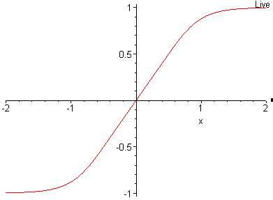

WaveGain v1.3.2
WaveGain is an application of the ReplayGain algorithms to standard PCM wave
files. Calculated gain adjustments are applied directly to the audio data,
instead of just writing metadata as traditionally done for other formats
like MP3, FLAC and Ogg Vorbis.
The replaygain values can also be added as metadata in a custom RIFF chunk named
'gain'. This could theoretically allow WAV files to have same lossless
functionality as other formats where audio data is not altered. But since no
current players are aware of this "standard" the metadata is used only by
WaveGain, for the "undo" feature.
Therefore, in the strictest meaning of the word, this process is NOT lossless.
However, with the application of dithering to the output, the losses can be
minimized and are, in any event, unlikely to be audible to the human ear.
So in simple terms, the program reads in wave files, analyses them, calculates
and displays recommended gain adjustments (track and album), and then applies
the adjustments directly to the wave data, if requested.
Usage
wavegain [OPTIONS] FILE...
wavegain [OPTIONS] FILE... [-e CMD [ARG...]] (Windows only)
Options
- -h, --help
-
Print the help information.
- -c, --calculate
-
Calculate and print gain settings and DC Offsets, but not do not apply them
(DEFAULT)
- -s, --fast
-
Similar to --calculate, but only only analyzes 8,192,000 samples per file.
Results will not be as accurate as a full analysis but with most material will
be within +/- 0.5db.
DC Offset will not be calculated.
- -y, --apply
-
Calculates and applies gain settings and DC Offset correction.
- -r, --radio
-
When used with --apply, use ReplayGain Radio/Single Track gain setting (DEFAULT)
Analyses the ReplayGain values for each of the tracks (files) specified on an
individual basis.
- -a, --album
-
When used with --apply, use ReplayGain Album/Audiophile gain setting.
Analyses the ReplayGain values for each of the tracks (files) specified and
collectively for the whole selection. The album gain value, if applied, ensures
that all tracks are adjusted by the same scaling factor and so retain the same
relative level of loudness.
- -q, --adc
-
When used with --apply, apply Album-based DC Offset correction.
The default is to apply Track-based DC Offset correction.
- -p, --no_offset
-
Do not apply any DC Offset correction.
- -x, --scale
-
Write scale values to stdout in the format: n.nnnnnn
In Album mode it only writes the Album Scale value, and
in Title mode it only writes the Title Scale values.
Only works with --calculate (calculation-only mode)
- -w, --write
-
When used with --apply, additionally write a 'gain' chunk into the Wave Header,
storing the scalefactor applied to the wave data as a double floating point number.
This header is required for the '--undo-gain' feature, and its presence will
also will also skip future re-processing of the affected file(s), unless '--force' is used.
- --force
-
Force the reprocessing of a file even if it contains a that contains a 'gain' chunk
(previously created using --write)
- --undo-gain
-
Read the scalefactor in the 'gain' chunk and uses the value to reverse the
previously applied gain. This will not recreate a bit identical version of the
original file, but it will be rescaled to the original level.
- -z, --recursive
-
Search for files recursively, treating each folder as a distinct album
- -l, --log
-
Write a log file. (Default filename = WGLog.txt)
- -f, --logfile
-
Specify log filename. Assumes --log
- -n, --noclip
-
Do not prevent clipping. The default is to prevent clipping.
- -dx, --dither=x
-
Dither output, where x is:
0 for dither OFF (default).
1 for dither without Noise Shaping.
2 for dither with Light Noise Shaping.
3 for dither with Medium Noise Shaping.
4 for dither with Heavy Noise Shaping.
Whenever the values of samples are altered, it is advisable, as a final stage before writing out, to apply dithering to the amended values. This process aids in preserving information in the low order bits that would otherwise be lost. In some cases, the application of noise shaping also aids this process. (I am not including any detail of the whys/wherefores or hows here as there are sources of information on the web that cover these far more eloquently and capably than I would be able to provide!) If the output is to be used for subsequent processing such as encoding to a lossy format, then dithering is not recommended. If dithering is applied, it should be in the last stage of processing.
- -t, --limiter
-
Apply 6dB Hard Limiter to output.
This option would normally be expected to be used in conjunction with --gain, when an increase in the recommended gain is required.
- -gx, --gain=x
-
Apply additional Manual Gain adjustment in decibels, where x is any floating point number between -20.0 and +12.0
Clipping Prevention will be applied by default unless --noclip is used.
Normally used in conjunction with the --limiter when an increase in gain is to be applied. This gain figure below is added to the value recommended by the ReplayGain calculation. Where an increase in gain is required, application of the hard limiter provides a smooth compression of the peaks and troughs rather than simply applying a crude hard cutoff at full peak scale.

- -o, --stdout
-
Write output file to stdout.
- -bx, --bits=x
-
Set output sample format, where x is:
1 for 8-bit unsigned PCM data.
2 for 16-bit signed PCM data
3 for 24-bit signed PCM data.
4 for 32-bit signed PCM data.
5 for 32-bit floats.
6 for 16-bit 'aiff' format.
By default, the output file will be of the same bitwidth and type as the input file.
- -e, --exec Cmd [Args] (Windows only)
-
Execute a command after WaveGain.
The following environment variables are available:
INPUT_FILE, INPUT_FDIR, INPUT_RDIR, INPUT_NAME,
TRACK_GAIN, TRACK_PEAK, TRACK_SCALE, TRACK_NEW_PEAK,
ALBUM_GAIN, ALBUM_PEAK, ALBUM_SCALE, ALBUM_NEW_PEAK,
DC_OFFSET_L, DC_OFFSET_R.
Input Files
WaveGain input files may be 8, 16, 24 or 32 bit integer, or floating point
wave files with 1 or 2 channels and a sample rate of 96000Hz, 88200Hz,
64000Hz, 48000Hz, 44100Hz, 32000Hz, 24000Hz, 22050Hz, 16000Hz, 12000Hz,
11025Hz or 8000Hz. 16 bit integer 'aiff' files are also supported.
Use '-' as filename for stdin input.